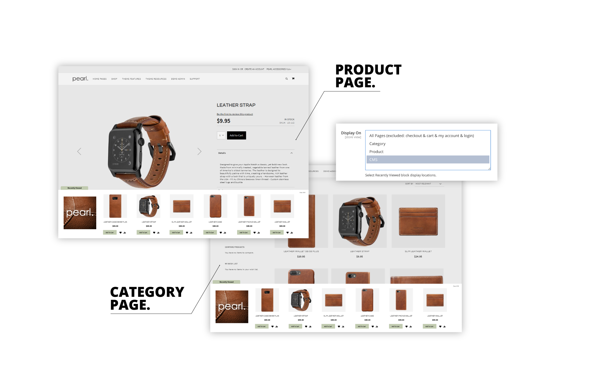
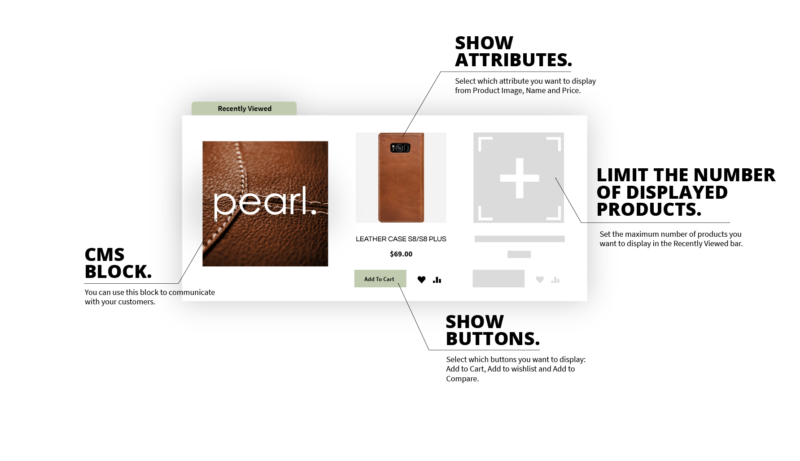
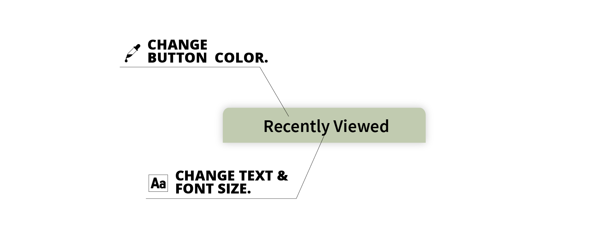
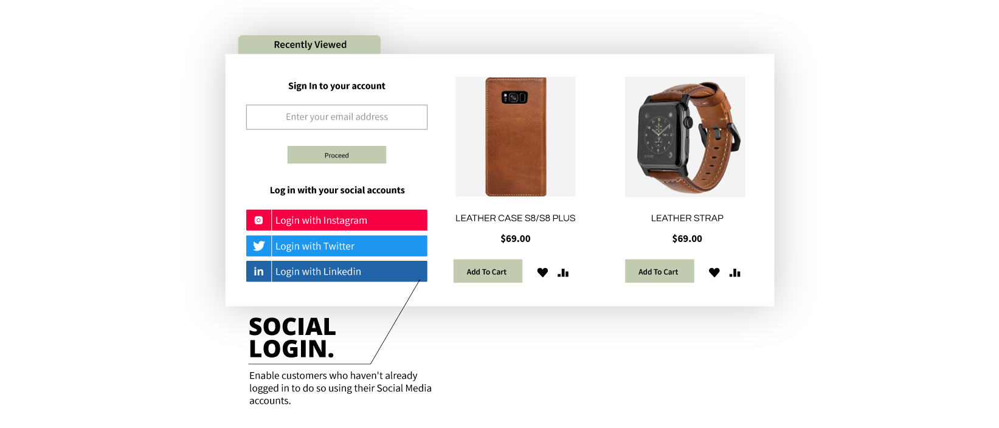
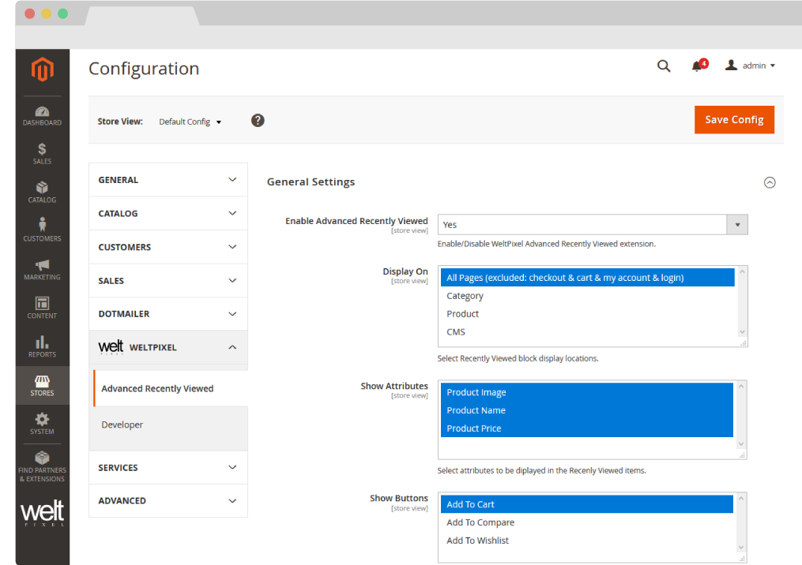
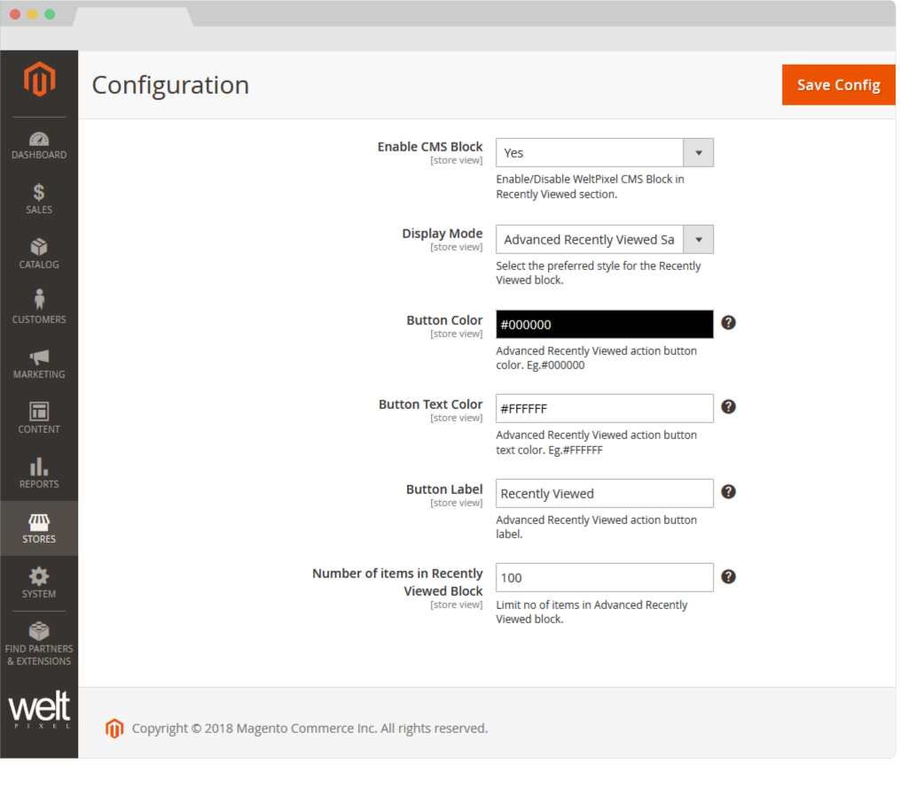

ADVANCED RECENTLY VIEWED PRODUCTS BAR FOR MAGENTO2.
This extension is also included in the Pearl Theme.

Multiple display functionalities.
Rich button customization.
Integration with the Magento 2 Social Login extension.
About Advanced Recently Viewed for Magento 2.
Your customers often want to return to a previously visited item. Reasons can vary but most often it’s due to checking if certain compatibility features of the previous item matched with the new one, other times because they wanted to compare to products against one another before deciding on which one to purchase, other times simply to return to a certain product scope from where they could use the breadcrumbs to traverse back up the category hierarchy.
Whatever the reason, the customers want to re-find a previous product, yet on sites without a “Recently viewed items” feature, the only ways to do this were either through extensive use of the browser “Back” button or to actually re-find the product by searching for it or plowing through the product categories once again.
With a “Recently viewed items” list readily available throughout the entire site, users are reassured that re-finding products will be easy and they will therefore be more likely to explore an extra couple of items as they know returning to their current favorite won’t be a hassle.
Because the list is automatically generated for any user, it is worth considering a couple of privacy features. While the vast majority of users will enjoy the “Recently viewed items” list, a few users will want to remove these items because they don’t want others to know the products they’ve browsed. To overcome these situations we also offer the option to “Clear all” to clear all the products in the user’s current list.
We've also added the possibility to add a custom static block right next to your list for customers that are signed in. On this static block, you can easily add promotions to featured sales or categories to improve visibility to those sections of your website for returning customers.
Last but not least, this extension integrates seamlessly with the Magento 2 Social Login module in order to display a login section instead of the block, if the user is not logged in. After the sign in process is completed, the sample block is shown as normal.
Social Login Integration
Customers visit your website from multiple devices as well as browsers. They start their shopping journey at their workplace, continue it on their phone while they commute and finally make their decision at home on their tablet or personal computer. Your customers might have viewed multiple products that caught their attention but forgot to bookmark them or add them to their wishlist, resulting in frustration over losing their recently viewed items history, which would mean they would need to start their search from the beginning, resulting infriction, which will decrease conversion rates.
Having your customers create an account, and getting them to be logged in every time they shop needs to be one of your main priorities in order to deliver the best possible shopping experience, retain browsing history, assure easy access to personalized offers and for you to be able to collect all the necessary data to further improve the user's experience.
Using the Social Media integration gives your customers easy access to logging in and having their shopping history saved. By getting visitors to log in, you increase your customer base, newsletter subscribers and offer the best possible shopping experience regardless of where your customers are shopping from.
Features of the Extension.
- Easily accessible and visible.
- Customizable button with the possibility of changing the label text and adding an icon
- Customizable Tooltip functionality on hover
- Fixed location at the bottom of the page.
- Slide up functionality
- Further customizable with CMS block for promotions
- Clear all functionality for privacy.
- Customers can easily re-find, recently viewed products.
- Integration with the Magento 2 Social Login extension.
HOW TO INSTALL
This extension is FREE and OPEN-SOURCE. The source code and installation files are available on GitHub.
GitHub Repository
Access the extension source code and download the installation files from our GitHub repository:
https://github.com/Weltpixel/magento2-weltpixel-recently-viewed-products
Installation Instructions
Please refer to the README file in the GitHub repository for detailed installation instructions.
General Installation Steps
- Step 1: Download or clone the repository from GitHub
- Step 2: Copy the extension files to your Magento 2 app/code/ directory
- Step 3: Run setup commands:
php bin/magento setup:upgrade php bin/magento setup:di:compile php bin/magento setup:static-content:deploy -f
- Step 4: Flush cache: php bin/magento cache:flush
Configure the Advanced Recently Viewed extension.
- Go to Admin > WeltPixel > Advanced Recently Viewed > Settings
-
General Settings
- Enable Advanced Recently Viewed - [ Yes / No ] Enable / Disable Advanced Recently Viewed on your store.
- Display On - Choose the pages on which the extension is visible.
- Show Attributes - Choose attributes to be displayed.
- Show Buttons - Choose buttons to be displayed.


-
Enable CMS Block - Enable or Disable the WeltPixel CMS Block in the Recently Viewed section of the page. The block is only visible when the user is signed in, and it can be integrated with the Social Login module. If the user is not signed in, and the Social Login extension is enabled and configured, the user will be given the possibility of logging in via their Social Media accounts or email.
Note: Once enabled, a dropdown will appear. Select Advanced Recently Viewed Sample Block. If Desktop images are added to the block, the class should be:
arv-desktop-img
class. For a mobile image, the class used is:arv-mobile-img
- Button Color - Set a color for the Advanced Recently Viewed button.
- Button Text Color - Set the text color for the Advanced Recently Viewed button.
- Button Label - Advanced Recently Viewed action button label.
- Button Position - Select the position of the Recently Viewed button on the bottom of the screen.
- Margin left percent - Insert the margin percent. Default: 5%.
- Show Icon - Show an icon on the button. If the Button Label field is empty only the icon will be displayed.
- Button Tooltip text on hover - Text displayed upon hovering the mouse on the Recently Viewed button.
- No of items in Recently Viewed Block - Limit number of items in the Advanced Recently Viewed Block.
- Head into Admin -> Content -> Blocks.
- Find the Recently Viewed Sample Block.
- Replace the content with the following:
<p>{{widget type="WeltPixel\SocialLogin\Block\Widget\Login" type_name="Social Login Block"}}</p> <div class="arv-cms-img"><img class="arv-desktop-img" src="{{view url='WeltPixel_RecentlyViewedBar/images/desktop_sample.png'}}"> <img class="arv-mobile-img" src="{{view url='WeltPixel_RecentlyViewedBar/images/mobile_sample.png'}}"></div>
Note: If you're updating from a version previous to 1.8.2, and the Social Login widget is not displaying on the CMS block when customers are not signed in, here is the solution:
Change Log.
What's new in v.1.16.0 - January 7, 2026
- Giving back: As a celebration of over 10 years of activity within the Magento 2 ecosystem, and as a way to give back to the community, a number of WeltPixel extensions (both FREE and paid) have officially gone fully Open Source via public Github repositories. Find the full list on Github.
- This extension has moved to a fully Open Source model and is available publicly on Github. See the link in the Change Log entry above to find it.
What’s new in v.1.15.9 - October 28, 2025
- Magento Compatibility: Introduced compatibility with the latest released Magento 2 Security Patches - Magento 2.4.8-p3, Magento 2.4.7-p8, Magento 2.4.6-p13, Magento 2.4.5-p15 & Magento 2.4.4-p16.
- New Feature: Added improvements to Magento Admin messaging around Product Updates to ensure visual clarity for users not running the latest product release.
- New Feature: Added .ddev.site and .cloudwaysapps.com as accepted development domains. These domains will no longer require additional license keys.
What’s new in v.1.15.7 - September 2, 2025
- Magento Compatibility: Introduced compatibility with the latest released Magento 2 Security Patches - Magento 2.4.8-p2, Magento 2.4.7-p7, Magento 2.4.6-p12, Magento 2.4.5-p14 & Magento 2.4.4-p15.
- Added additional validations to prevent Magento Admin errors when the Backend extension could not fetch the current server user due to permissions issues.
- Added adjustments to frontend templates to adhere to Magento Best Practices regarding XSS validations.
- Fixed a CSP issue that would sometimes prevent orders from being created via the Magento Admin.
What’s new in v.1.15.3 - June 20, 2025
- Magento Compatibility: Introduced compatibility with the latest Magento 2.4.8-p1, 2.4.7-p6, 2.4.6-p11 & 2.4.5-p13 Security Patches releases. Upgrade ASAP to keep your store secure.
- Fixed the Backend functionality that enables users to change the default Magento CSP Restriction Mode via the Magento Admin. This was broken starting with Magento 2.4.7.
What’s new in v.1.15.0 - April 22, 2025
- Magento Compatibility: Introduced compatibility with the new Magento 2.4.8 release, as well as the accompanying 2.4.7-p5, 2.4.6-p10, 2.4.5-p12 and 2.4.4-p13 Security Patches.
- PHP Compatibility: Introduced compatibilty with PHP 8.4, which is now officially compatible with the latest Magento 2.4.8 version.
- New Feature: Added magento2.docker as a valid domain for development purposes.
- New Feature: Added ddev.site as a valid domain for development purposes.
- Fixed an issue that would prevent certain extension options from correctly applying in Single Store Mode instances.
- Fixed a display issue that would cause the Add to Cart button to be unclickable in the Recently Viewed Products bar.
- Added backend licensing adjustments for compatibility with the Google Analytics & Social Marketing Suite PRO.
What’s new in v.1.14.13 - February 17, 2025
- Magento Compatibility: Introduced compatibility with the newly released Magento 2.4.7-p4, 2.4.6-p9, 2.4.5-p11 and 2.4.4-p12 versions.
- Fixed an issue related to licensing which would prevent license keys from being validated various subdomains.
What’s new in v.1.14.11 - January 15, 2025
- Fixed a display issue which would cause items in the Recently Viewed Bar to improperly overflow to the right of the screen when not using a static block, due to missing CSS properties that were only applied when the block was inserted.
- Removed deprecated Magento 2.2.x code version from extension package.
What’s new in v.1.14.9 - October 11, 2024
- Added minor Magento Admin adjustments to the module status section for increased clarity and compatibility with server-side Social Pixel addons.
What’s new in v.1.14.7 - October 11, 2024
- Compatibility: Introduced compatibility with the latest Magento 2.4.7-p3, 2.4.6-p8, 2.4.5-p10 and 2.4.4-p11 versions, which come with critical security adjustments for the platform. Magento 2 merchants are urged to upgrade to the latest patches ASAP.
- Added various code updates for increased security around the licensing functionality as well as the Help Center and WeltPixel Developer Magento Admin sections.
What’s new in v.1.14.5 - August 23, 2024
- Compatibility: Introduced compatibility with the latest Magento 2.4.7-p2, 2.4.6-p7, 2.4.5-p9 and 2.4.4-p10 versions, which come with critical security adjustments for the platform. Magento 2 merchants are urged to upgrade to the latest patches ASAP.
What’s new in v.1.14.3 - June 20, 2024
- Compatibility: Introduced compatibility with the latest Magento 2.4.7-p1, 2.4.6-p6, 2.4.5-p8, 2.4.4-p9 versions, which come with critical security adjustments for the platform. Magento 2 merchants are urged to upgrade to the latest patches ASAP.
- New Feature: Added a new section in the Magento Admin that checks to make sure the latest product version is installed and notifies in case an update is available, as well as a button that allows for new features to be requested.
- New Feature: Fixed a minor display issue that would result in text and other content overflowing downwards off the screen on extremely high resolutions (2k and up).
What’s new in v.1.14.1 - April 19, 2024
- Confirmed compatibility with the latest Magento 2.4.7 release, as well as newly released 2.4.6-p5, 2.4.5-p7 & 2.4.4-p8 Security Patches.
- Confirmed compatibility with PHP 8.3 on the Magento 2.4.7 release. PHP 8.2 is also supported for this Magento version.
- Added security improvements to the Backend module's license verification process.
What’s new in v.1.11.21 - January 9, 2024
- Added various optimizations for ADA compliance to ensure a high degree of compatibility and increased scores across testing platforms.
- Fixed an error that would be thrown in the WeltPixel -> Extensions Version admin section when a module's composer.json file was missing the version node.
What’s new in v.1.11.19 - October 19, 2023
- Optimized the license verification process for increased Magento Admin performance, as well as to account for licensing server downtimes.
- Fixed an issue that would sometimes result in an error being thrown when using older PHP versions, such as PHP 7.4.
- Confirmed compatibility with the newly released Magento 2.4.6-p3, 2.4.5-p5, and 2.4.4-p6 Security Patches.
What’s new in v.1.11.17 - June 28, 2023
- Confirmed compatibility with the latest Magento Security Patch releases 2.4.6-p1, 2.4.5-p3 and 2.4.4-p4.
- Fixed an error related to PHP 8.2 that would show when accessing the WeltPixel Debugger.
- Added .localdev as a universally accepted licensing domain.
What’s new in v.1.11.15 - March 22, 2023
- Fixed a bug that would occasionally prevent certain frontend notification messages from being displayed.
- Fixed an error that would sometimes be thrown in the WeltPixel Debugger, depending on various server permissions.
- Added compatibility with the latest Magento 2.4.6 and 2.4.5-p2 versions.
What’s new in v.1.11.11 - November 23, 2022
- Confirmed compatibility with the latest Magento Security Patch releases 2.4.5-p1 and 2.4.4-p2.
What’s new in v.1.11.7 - September 1, 2022
- Confirmed compatibility with the latest Magento 2.4.5 and 2.4.4-p1 versions.
- Updated installation/upgrade scripts to use data patches.
What’s new in v.1.11.1 - April 25, 2022
- Fixed an incorrect licensing message on B2B Magento Enterprise instances which would display when an invalid license was entered.
- Confirmed compatibility with the latest Magento 2.4.4 and 2.3.7-p3 versions as well as PHP 8.1.
What’s new in v.1.10.17 - October 22, 2021
- Confirmed compatibility with the latest Magento 2.4.3-p1 and 2.3.7-p2 versions.
What’s new in v.1.10.15 - August 31, 2021
- Updated Social Login intergation comments and option layout in the Magento Admin dashboard for improved clarity.
- Fixed an error that occurred when using the Social Login intergation with the Social Login FREE module.
- Confirmed compatibility with the newly released Magento 2.4.3, 2.4.2-p2 and 2.3.7-p1 versions.
- Added .localhost as an accepted domain termination for the licensing process.
What’s new in v.1.10.11 - July 7, 2021
- New Feature: Added Lazy Loading to Recently Viewed Product Bar images and Sample Block.
- Added improvments to the WeltPixel Developer Magento Admin section. Latest Cron Jobs now lists the last 100 executed Cron Jobs.
What’s new in v.1.10.9 - May 18, 2021
- Fixed a bug that caused the Recently Viewed button to create a horizontal clickable area that expanded the width of the screen. This could sometimes overlap with other buttons and links.
- Added functionality whereby the Recently Viewed Products Bar now closes automatically when a user clicks outside of it.
- Added adjustments to Magento Admin settings comments for increased clarity.
- Confirmed compatibility with the newly released Magento 2.3.7 and 2.4.2-p1 versions.
What’s new in v.1.10.7 - March 26, 2021
- Excluded Magento 2.0.x - 2.2.x from new features and fixes starting with this release.
- djusted WeltPixel Developer section comments.
What’s new in v.1.10.5 - February 12, 2021
- New Feature: Added an option to display an icon on the button, as well as to change the label text.
- New Feature: Added an option to change the Recently Viewed button position.
- New Feature: Added an option to display a customizable tooltip on hover.
- Confirmed compatibility with the newly released Magento 2.4.2 version.
- Added additional backend versioning verifications.
- Backend module code optimizations.
What’s new in v.1.10.1 - October 22, 2020
- Confirmed compatibility with the newly released Magento 2.4.1 version.
What’s new in v.1.10.0 - August 10, 2020
- Confirmed compatibility with the newly released Magento 2.4.0 version.
What’s new in v.1.9.8 - July 6, 2020
- Whitelisted domain for Content Security Policies introduced in Magento 2.3.5.
What’s new in v.1.9.7 - May 7, 2020
- Confirmed compatibility with Magento 2.3.5.
- Implemented small Backend performance optimizations.
- Added nxcli.net (Nexcess temporary URL) as a valid domain in the licensing process.
- Added an option in the Developer section to allow for switching Magento's CSP between "report-only" and "restrict".
What’s new in v.1.9.6 - April 9, 2020
- Removed a dependency on jQuery UI.
- Fixed a Backend issue on Magento Commerce whereby the Category Schedule functionality was not working properly.
What’s new in v.1.9.5 - March 10, 2020
- Fixed a bug that caused Category Page display issues when adding a lot of items to the Recently Viewed Products Bar.
- Added backend Google reCaptcha compatibility for Magento 2.3.x
What’s new in v.1.9.4 - February 5, 2020
- Code enhancements for increased security. Changed User Group info collection method.
- Confirmed compatibility for Magento 2.3.4.
What’s new in v.1.9.2 - November 27, 2019
- Fixed an issue whereby the mobile version of the Sample CMS Block would not display.
- Optimized Social Login integration with the Recently Viewed Products Bar.
- Removed domready in order to use a jQuery doc ready event instead.
- Added Magento and PHP version in the WeltPixel Developer section.
What’s new in v.1.9.1 - October 16, 2019
- Added error handling for setup scripts upon block creation.
- CSS adjustments.
- Removed domready in order to use a jQuery doc ready event instead.
- Confirmed compatibility with the latst Magento 2.3.3 version.
- Included the WeSupply Toolbox integration extension - Proactive Notifications Email & SMS, Returns & RMA, Store Locator, Delivery Date Estimate, Logistics Analytics, NPS & CSAT score. Get Free on-boarding and launch within 24 hours.
What’s new in v.1.9.0 - July 18, 2019
- Confirmed compatibility with Magento 2.3.2.
- Added HTTPS endpoint for licensing process.
What’s new in v.1.8.5 - June 7, 2019
- Small performance improvements.
What’s new in v.1.8.4 - April 25, 2019
- Added PHP version in the WeltPixel Developer Section.
What’s new in v.1.8.3 - April 3rd, 2019
- Fixed an issue whereby breadcrumbs disappeared when clearing the Recently Viewed Bar. Removal is now done through Ajax.
- Confirmed compatibility for Magento 2.3.1.
What’s new in v.1.8.2 - January 24, 2019
- Helpcenter adjustment, removed Zendesk iframe and added a simple link to our Support Center in order to avoid any potential conflicts with other admin js added by 3rd party extensions.
- Fix for multiple rewritten ImageFactory classes, rewrite check validity, rewrite checks optimizations.
What’s new in v.1.8.0 - December 8, 2018
- Compatibility adjustments for Magento 2.1.16/2.2.7/2.3.0.
- PHP 7.2 compatibility added.
- As Magento 2.3 comes with major core changes, we have provided a different set of files in order to achieve the best performance on each version.
What’s new in v.1.7.5 - October 23, 2018
- Initial release.